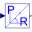

BlocksBlocks for space phasor transformation |
|
Package Contents
|
Rotates space phasor |
|
|
Conversion of polyphase instantaneous values to space phasors |
|
|
Conversion of space phasors to polyphase instantaneous values |
|
|
Converts a space phasor to polar coordinates |
|
|  |
Converts a space phasor from polar coordinates |
|
Sets angle to zero when length is below threshold |
Information
This information is part of the Modelica Standard Library maintained by the Modelica Association.
This package contains space phasor transformation blocks for use in controllers:- ToSpacePhasor: transforms a set of polyphase values to space phasor and zero sequence system
- FromSpacePhasor: transforms a space phasor and zero sequence system to a set of polyphase values
- Rotator: rotates a space phasor (from one coordinate system into another)
- ToPolar: Converts a space phasor from rectangular coordinates to polar coordinates
- FromPolar: Converts a space phasor from polar coordinates to rectangular coordinates
Space phasors are defined as vectors of length = 2, the first element representing the real part and the second element representing the imaginary part of the space phasor.